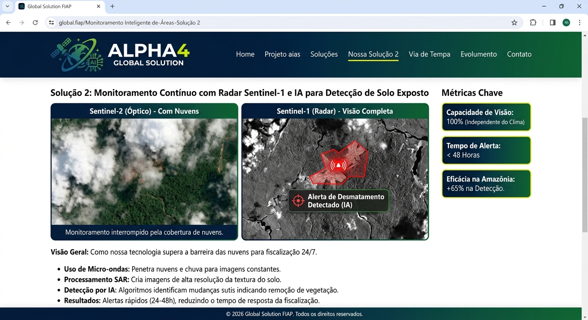

Módulos da Solução e Detalhamento Técnico
Para garantir eficiência na detecção e resposta a ilegalidades, nossa solução é organizada em módulos especializados, cada um focado em um tipo de área crítica: favelas/ocupações irregulares, desmatamento em biomas como Amazônia e Cerrado e mineração ilegal.
Módulo 1 – Ocupações Irregulares em Áreas Urbanas
Nas grandes cidades brasileiras, favelas e comunidades crescem rapidamente, muitas vezes ocupando encostas, margens de rios e outras Áreas de Preservação Permanente (APPs). Nosso módulo urbano atua da seguinte forma:
- Comparação temporal de imagens de alta resolução de uma mesma região urbana.
- Detecção de expansão de “manchas urbanas” (novas construções ou barracos) em poucas semanas.
- Identificação de ocupações que avançam sobre encostas ou margens de rios.
- Geração de alertas para prefeituras e órgãos municipais com coordenadas precisas.
Com essa abordagem, os agentes fiscalizadores podem atuar em 24 a 48 horas, reduzindo 80% a 90% das invasões desse tipo em áreas críticas.
Módulo 2 – Monitoramento de Desmatamento na Amazônia e Cerrado
Este módulo é focado nas regiões mais afetadas por desmatamento ilegal. Aqui, o foco é o uso combinado de NDVI e radar:
- NDVI (Índice de Vegetação): O sistema calcula o NDVI a partir de bandas de infravermelho próximo. Vegetação saudável reflete muito essa luz; quedas bruscas indicam desmatamento ou clareiras.
- Detecção de Queda de NDVI: Quando o índice cai significativamente de uma semana para outra, o sistema marca aquela área como suspeita.
- Complemento com Radar (Sentinel-1): Mesmo em dias nublados, o radar detecta mudanças estruturais no solo e na vegetação.
- Foco em Áreas Protegidas: Metade do desmatamento na Amazônia ocorre em terras públicas ou áreas protegidas – nosso sistema prioriza essas regiões com maior sensibilidade.
Com a melhoria do tempo de resposta, estimamos uma melhoria de 50% a 70% nos índices de impedimento de desmatamento ilegal.
Módulo 3 – Mineração Ilegal e Garimpo
A mineração ilegal depende de uma logística pesada (escavadeiras, motores, combustíveis, mercúrio) e causa danos profundos ao meio ambiente. Nosso módulo para mineração ilegal identifica:
- Assinaturas de solo exposto em áreas onde deveria haver floresta densa.
- Alterações em cursos d'água, como rios turvos, barragens improvisadas e áreas de lama.
- Clareiras geométricas típicas de garimpos e estradas de acesso recém-abertas.
Com isso, é possível detectar rapidamente novos pontos de garimpo e acionar operações de fiscalização antes que o impacto se torne irreversível, com potencial de redução de 60% a 80% dos casos que hoje só são identificados tardiamente.
Módulo 4 – Geofencing e Sistema de Alerta
Para evitar falsos positivos e priorizar o que é realmente crítico, utilizamos geofencing:
- O sistema armazena, em banco de dados, polígonos oficiais de áreas protegidas e governamentais.
- As coordenadas (latitude e longitude) definem perímetros de APPs, terras públicas e reservas ambientais.
- Somente mudanças dentro desses perímetros geram alertas prioritários.
Quando uma mudança suspeita é detectada:
- O sistema gera um alerta com imagem anterior, imagem atual e mapa da região.
- Profissionais da central revisam os dados e confirmam a irregularidade.
- Um relatório é enviado diretamente para o órgão responsável com todas as evidências necessárias.
Esse módulo é o “cérebro operacional” da plataforma, garantindo que os agentes recebam alertas confiáveis, georreferenciados e dentro de prazos que realmente fazem a diferença na prevenção e contenção de danos ambientais e sociais.

Visão dos diferentes módulos de monitoramento: urbano, florestal, mineração e sistema de alerta.